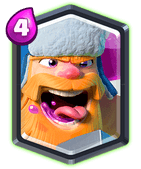

Legendary Card: Lumberjack

Really feel bad for him.
Right when he started to popularize, Night Witch was released and basically, she out-classed him. Now, when Night Witch was finally nerfed and balanced, they buffed the Mini P.E.K.K.A. So, now Mini P.E.K.K.A. is dominating and LJ is still at the bottom of the list of 4 elixir tank killers.
He has insane attack speed and good damage, giving him the ability to deal high amounts of damage in a short amount of time. His death rage can be pretty punishing if many cards are placed behind him. But what he lacks is HP.
He isn’t actually able to be the really deadly pressurizing card like the Bandit is, nor a decently tanky tank killer.
A single HP buff to make him a good mini tank as well as buffing the rage spell to indirectly buff LJ will make him a great card.
Currently he is strongest in Golem and Giant beatdown decks but can also be great due with Battle Ram and Hog Rider. Mega Knight counters him pretty easily while LJ doesn’t do enough to counter MK on defense.